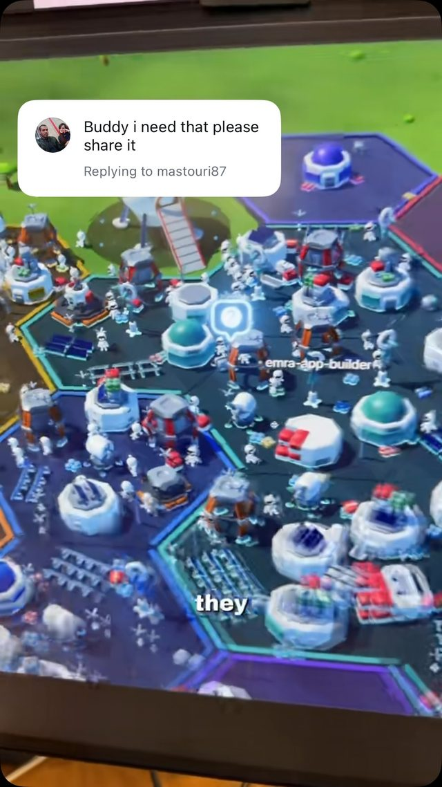
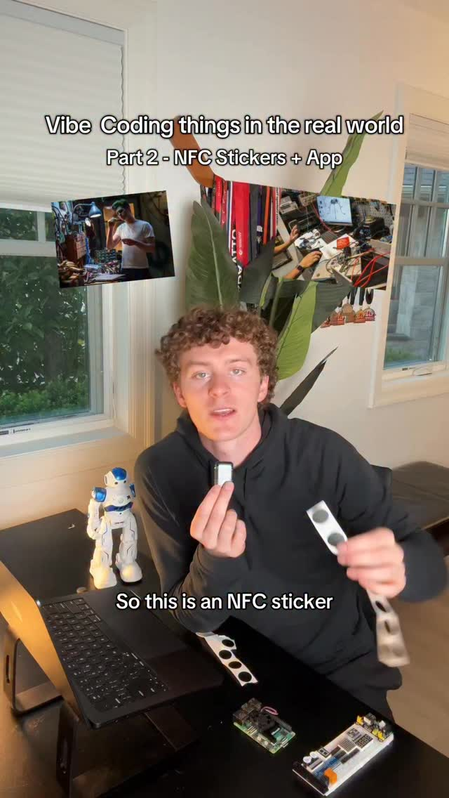
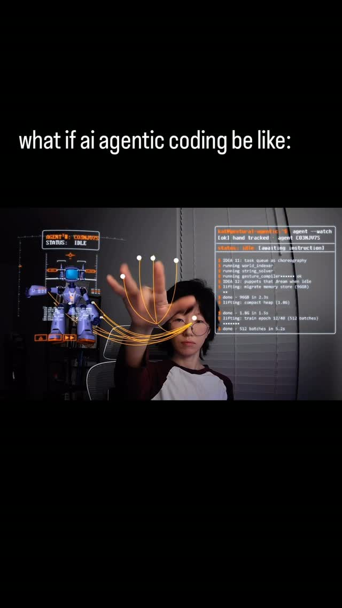
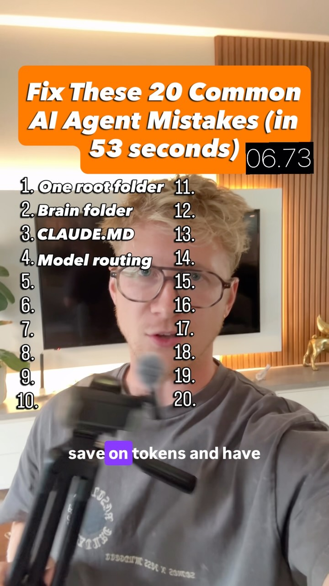

Ambient Executive Function — glanceable hardware for agents and attention
Try It — Action Sketch
Build an ESP32 + 2.7in Sharp memory LCD in a printed stand; it polls a tiny endpoint serving (a) top 3 lines of NOW.md, (b) count of agent sessions awaiting approval via a Claude Code Notification/Stop hook. Stick NFC tags on desk, water bottle and door: tap = 'done/started/leaving', logged by an iOS Shortcut to the same endpoint; the display updates within seconds. Run 14 days logging glance-triggered actions (taps within 2 min of a display change) and agent wait time before/after. Falsifier: if glance-triggered actions fall to near zero by week two (habituation) and agent wait time doesn't drop, ambient display isn't beating a phone notification.
Connected Posts (10)






Prompt system — run this yourself
Pasteable into Claude Code, Claude, or any agent. One-shot for the whole result, step prompts when you want to steer. Every step carries its own audit; the gap audit makes the agent find and fill what it missed.
Mission. Running this system builds a small always-on desk object, an ESP32 driving a 2.7 inch Sharp memory LCD in a printed stand, that shows the top three lines of NOW.md and the count of Claude Code sessions waiting for approval, plus NFC tags that log done/started/leaving with one tap through an iOS Shortcut. It is for someone whose executive-function failure is the remembering-to-look step. Done means the display updates within 10 seconds of a hook or tap, a 14-day study with a baseline and a phone-notification comparison has run, and the dive's falsifier (habituation by week two, no drop in agent wait time) has been scored from logs.
1 · Deeper, not bigger
- What a top professional would do (that you didn't ask for): A human-factors researcher would design the 14 days as an ABAB single-case study, not a before/after: baseline logging with the display off, display on, phone notifications instead, display on again. They would pre-register the two metrics (glance-triggered actions and agent wait time) with exact definitions from the logs, because the Hawthorne effect in the source set (self-observation alone changes behavior) will inflate any before/after. A hardware engineer would measure current draw, handle the memory LCD's VCOM toggle requirement, and make the device fail visibly (a stale-data marker) instead of silently showing old counts. A security-minded builder would keep approvals in the terminal and make the endpoint LAN-only with a token.
- Rawest material to start from: - Claude Code hooks documentation: the Notification, Stop, UserPromptSubmit and PreToolUse events and the JSON each passes on stdin (session_id, transcript_path, message). - Sharp LS027B7DH01 datasheet (400x240, 3-wire SPI, EXTCOMIN/VCOM toggle) and the Adafruit SHARP Memory Display breakout guide with the Adafruit_SharpMem Arduino library. - ESP32 Arduino core docs for WiFi, HTTPClient and light sleep. - NTAG213/215 tag specs and Apple Shortcuts personal automation docs (NFC trigger, Get Contents of URL). - The source designs: cooper.simson's notch monitor (working, needs attention, done), jarrenrocks' Bot Crossing hand-raise model, OpenAI's $230 Codex Micro, byjackprice's NFC water-bottle logger, cooper.simson's NOW.md file tree. - Your own baseline: 3 days of hook logs with no display, to measure current agent wait time.
- Methods and tools: Claude Code hooks as shell commands posting JSON with curl to a local FastAPI (or Next.js route) server backed by SQLite; event table (ts, source, session_id, kind); state endpoint returning now_lines and waiting_count with an ETag; ESP32 (Arduino or PlatformIO) polling every 5 s with If-None-Match and redrawing only on change; Adafruit_SharpMem with a hardware timer toggling VCOM at 1 Hz; a USB power meter for current; NFC tags written with NFC Tools; iOS Shortcuts personal automation per tag posting to /tap; ntfy for the phone-notification comparison arm; pandas for the analysis; an ABAB single-case design and a pre-registration file.
- What proves it right: The event logs, not self-report: wait time computed from Notification to the next UserPromptSubmit or PreToolUse per session_id, compared across ABAB phases. A stopwatch or screen recording showing end-to-end latency from hook firing to the panel changing. A USB power meter reading. A second person sitting at the desk for an hour who can say what is waiting without being told.
Rewritten prompt — ask for exactly that:
Build an ambient desk display for agent approvals and my NOW list, and design it so the logs can prove whether it helps. Hardware: ESP32 plus a 2.7 inch Sharp memory LCD (LS027B7DH01, 400x240) via Adafruit_SharpMem, VCOM toggled by a timer, in a printed stand. Server: a FastAPI app with SQLite on my LAN, token-authenticated, endpoints /hook (Claude Code Notification, Stop, UserPromptSubmit, PreToolUse events with session_id), /tap (NFC events from iOS Shortcuts: done, started, leaving per tag), and /state (top 3 lines of NOW.md, count of sessions waiting, last-update time, ETag). The ESP32 polls /state every 5 s, redraws only on change, and shows a stale marker if the server is unreachable for 60 s. Approvals stay in the terminal; the display only shows counts. Measure end-to-end latency (target under 10 s) and current draw. Then run a 14-day ABAB study: days 1-3 baseline (logging only, display off), 4-7 display on, 8-10 phone notifications via ntfy instead, 11-14 display on. Pre-register two metrics: glance-triggered actions (a tap or prompt within 2 minutes of a display change) and agent wait time (Notification to next user action, per session). Score the falsifier: glance-triggered actions near zero by week two and wait time not lower than the ntfy phase means the display lost.
2 · One-shot prompt
ROLE AND STANCE You are an embedded engineer and human-factors researcher building an ambient-display intervention for executive-function friction. You build the smallest device that works, then let the logs decide whether it helps. You expect novelty and the Hawthorne effect to inflate early results and you design for that. CONTEXT - Problem framing: OpenAI's $230 Codex Micro controller; cooper.simson's MacBook notch app showing working / needs attention / done; jarrenrocks' Bot Crossing where 80 agents raise their hands; the.poet.engineer's gesture concept. All say multi-agent supervision is a status-surface problem. - Hardware: Sharp memory LCD (mewtru): each pixel stores state, near e-paper power, readable in sunlight, fast enough for about 50 fps. Target the 2.7 inch LS027B7DH01 (400x240) with an ESP32. - Input: byjackprice's NFC sticker + Apple Shortcut + tiny Next.js endpoint; stickers on desk, water bottle and door. - Memory: cooper.simson's file tree with NOW.md as short-term memory; raycfu's end-of-day audit as next-day context. - Caution: dr.memonoff's Hawthorne story means self-observation alone changes behavior; a before/after cannot separate the display from the logging. HARD CONSTRAINTS - The display shows counts and text only. Approving tool use stays in the terminal; no remote approval endpoint. - Server is LAN-only, requires a bearer token loaded from .env (never committed, never printed), and rejects unknown event kinds. - No prompt or code content leaves the machine: hooks send session_id, event kind and timestamp only. - Display must show a stale marker if /state has not succeeded for 60 s. - Metrics are defined before data collection in prereg.md and not changed afterward. DELIVERABLES, IN ORDER 1. ground_truth.md: hook event list and stdin JSON fields confirmed by logging real events to a file for one session; LCD wiring (SCLK, MOSI, CS, EXTCOMIN or software VCOM, 5V/3V3 per breakout); measured baseline agent wait time from 3 days of hook logs. 2. server/: FastAPI + SQLite with /hook, /tap, /state (ETag), /export.csv; pytest for each route. 3. hooks/: settings.json snippet registering Notification, Stop, UserPromptSubmit and PreToolUse hooks that curl /hook in the background with a 2 s timeout so a dead server never blocks Claude Code. 4. firmware/: PlatformIO project, Adafruit_SharpMem, 5 s polling with If-None-Match, partial redraw, stale marker, VCOM at 1 Hz, OTA disabled by default. 5. stand/: a parametric stand (OpenSCAD or CadQuery) at 15 degrees tilt with cable channel. 6. nfc/: tag map (tag id to action), Shortcut export instructions, and a test log of 20 taps with latency. 7. study/: prereg.md, the ABAB schedule, analysis.py computing both metrics per phase with bootstrap intervals. 8. report.md. BUILT-IN GAP ANALYSIS Keep GAPS in report.md with VERIFIED / UNVERIFIED / FALSE and evidence for: latency under 10 s from hook to panel; latency from tap to panel; current draw; that the Notification hook fires on permission prompts in your Claude Code version; that the waiting count clears when the user responds; that the stale marker appears when the server is killed; that wait time is lower in display phases than in the ntfy phase; habituation (glance-triggered actions per day trend within display phases). Fill each by running the test. SELF-QUESTIONS - Does a session that ends without a Stop event leave the count stuck? - Does the count double when two Notification events fire for one prompt? - Is the baseline long enough to see day-to-day variance? - Am I counting taps that would have happened anyway as glance-triggered? - What happens on Wi-Fi drop at 3 a.m.? - Can anyone on the LAN spoof /tap or /hook? STOP CONDITIONS Stop and ask if Claude Code hook behavior differs from the docs in a way that breaks the waiting count, or if the user does not want to run the ntfy phase. Stop building features once latency and stale handling pass; the study is the point. RETURN FORMAT report.md with a table per phase (days, glance-triggered actions per day, median and p90 agent wait time, intervals), latency and power measurements, the falsifier verdict, GAPS, and the file tree.
3 · Step-by-step prompts
Step 1 — Ground truth: hooks, display, baseline
Goal: Confirm what the hooks actually emit, how the display is driven, and what wait time is today.
Add a temporary Claude Code hook config that, for Notification, Stop, UserPromptSubmit and PreToolUse, appends the stdin JSON's keys (not values of prompts or tool inputs) plus session_id, hook_event_name and a timestamp to ~/hooklog.jsonl. Run three real sessions including one that asks for a permission and one you abandon. Document which events fire when, whether Notification fires for permission prompts and for idle, and whether an abandoned session ever sends Stop. Leave the logger running 3 days and compute baseline agent wait time: for each Notification, minutes until the next UserPromptSubmit or PreToolUse in the same session. Read the LS027B7DH01 datasheet and the Adafruit Sharp memory breakout guide; record the pinout, voltage, SPI mode and the VCOM toggle requirement (about 1 Hz, via EXTCOMIN pin or software bit). Write ground_truth.md.
Expect: ground_truth.md with an event table, three annotated session traces, baseline wait-time median and p90, and the display wiring table.
Audit before moving on: Confirm no prompt text or tool input made it into hooklog.jsonl (grep for a known prompt string). Fail and fix the logger if it did. Mark any doc claim you could not trigger as UNVERIFIED.
Step 2 — State server and hooks
Goal: One small LAN endpoint that turns events into display state.
Write server/ with FastAPI and SQLite. Tables: events(ts, source, session_id, kind, tag). Routes: POST /hook (body: session_id, kind) and POST /tap (body: tag, action), both requiring a bearer token from .env; GET /state returning {now_lines: first 3 non-empty lines of NOW.md, waiting: count, updated: ts} with an ETag hash; GET /export.csv. Waiting logic: a session is waiting after a Notification until its next UserPromptSubmit, PreToolUse or Stop; expire waiting after 2 hours so abandoned sessions do not stick. Write hooks/settings.json snippet: each hook runs curl -s -m 2 in the background so Claude Code never blocks. Write pytest cases: double Notification counts once; Stop clears; expiry works; bad token returns 401; NOW.md edits change the ETag. Log every /state fetch with its ETag so step 5 can compute glance windows.Expect: server/ with passing tests, hooks snippet, .env.example with the token name only.
Audit before moving on: Kill the server and run a Claude Code session; confirm hooks add under 100 ms and no error appears. Fail if any test is skipped. Check .gitignore includes .env before the first commit.
Step 3 — Firmware and stand
Goal: Show state on the Sharp memory LCD with honest staleness.
Create a PlatformIO ESP32 project using Adafruit_SharpMem at 400x240. Every 5 s, GET /state with If-None-Match; on 200, redraw: a large waiting count top-right (inverted block when above zero), the three NOW lines word-wrapped below, and a small updated time. On 304 do nothing. Toggle VCOM at 1 Hz from a hardware timer. If no successful response for 60 s, draw a diagonal stale stripe and the last success time. Store Wi-Fi credentials and the token in a secrets.h that is gitignored. Measure current with a USB power meter: idle polling, during redraw, and with Wi-Fi modem sleep enabled. Write a parametric stand in OpenSCAD: 15 degree tilt, pocket for the breakout, cable channel, print-ready STL. Place it where it sits in peripheral vision from the keyboard, not behind the monitor.
Expect: firmware that builds, photos or a description of the panel in three states (zero, waiting, stale), current measurements, stand.scad and STL.
Audit before moving on: Pull the server's network and time how long until the stale stripe appears; fail if over 75 s. Measure hook-to-panel latency 10 times with a phone stopwatch; fail if median exceeds 10 s.
Step 4 — NFC tap input
Goal: One-tap physical logging that reaches the display.
Write NTAG213 tags (NFC Tools) for desk (started), water bottle (done-water) and door (leaving). In iOS Shortcuts create one personal automation per tag: When NFC tag is scanned, Get Contents of URL POST to http://<server>/tap with JSON {tag, action} and the bearer header, Run Immediately on, Notify When Run off. Android users: Tasker with an NFC profile and HTTP Request action. Add a /state field last_tap so the panel shows a one-line confirmation for 30 s after a tap. Tap each tag 20 times across a day and log end-to-end latency from tap to panel. Document what happens off-LAN (expect failure) and decide whether to queue taps in the Shortcut or accept loss. Record that decision, because lost taps would otherwise read as no action in the study.Expect: nfc/tagmap.md, shortcut steps, a latency log of 60 taps with median and p90.
Audit before moving on: Fail if more than 2 of 60 taps are lost while on LAN. Confirm the token is not visible in any screenshot you saved.
Step 5 — Pre-register and run the ABAB study
Goal: Collect 14 days of evidence that can falsify the idea.
Write study/prereg.md before day 1: phases A1 days 1-3 baseline (display face down, logging on), B1 days 4-7 display on, C days 8-10 display off with ntfy phone notifications sent by the server on each new waiting session, B2 days 11-14 display on. Metrics: (1) glance-triggered actions per day = taps or UserPromptSubmit events within 2 minutes after a /state change that the device fetched (log fetches server-side); (2) agent wait time per Notification, median and p90. Expected effect, minimum effect worth keeping (for example 25% lower median wait than phase C), and the falsifier from the dive: glance-triggered actions near zero by week two and wait time not lower than phase C. Write analysis.py producing per-phase tables with bootstrap 95% intervals and a daily trend plot for habituation. Then run the 14 days; record deviations in a log.
Expect: prereg.md committed before day 1 (git timestamp), 14 days of events, analysis.py output.
Audit before moving on: Check the prereg commit predates the first study event. Fail if metric definitions changed after day 1; if they did, report both versions.
Step 6 — Validate against oracles and write the gap report
Goal: Score the falsifier and list what is still unproven.
Run analysis.py on /export.csv. Report per phase: days, glance-triggered actions per day, median and p90 wait time, intervals. Compare B1 and B2 against A1 and against C. Score habituation as the slope of daily glance-triggered actions within B phases. State the falsifier verdict: fired (display not better than phone notification and habituating), did not fire, or inconclusive (intervals overlap). Include latency and power measurements and the stale test. Have a second person sit at the desk for one hour without instructions and record whether they can say how many agents are waiting. Write report.md with a GAPS list: each claim VERIFIED, UNVERIFIED or FALSE with evidence, and the top three gaps fixed or with reasons. End with a keep, change or retire recommendation for the device.
Expect: report.md with phase table, verdict, measurements, second-person result and GAPS.
Audit before moving on: Recompute two numbers in the table by hand from the CSV. Fail if the verdict claims a win while intervals overlap with phase C.
4 · Gap analysis and audit
You are auditing an ambient executive-function display build: ESP32 + Sharp memory LCD, FastAPI state server, Claude Code hooks, NFC taps, 14-day ABAB study. Inputs: ground_truth.md, server/, hooks/, firmware/, nfc/, study/, report.md, events export. 1) Enumerate claims: latency targets met, stale marker works, waiting count correct, no prompt content logged, token never committed, metrics pre-registered, wait time improved versus the phone-notification phase. 2) Re-verify each: run the pytest suite; grep git history for the token name with a value; grep the events DB for any free text; kill the server and time the stale marker; replay the CSV through analysis.py and recompute the phase table; check the prereg commit time against the first event. Mark VERIFIED, UNVERIFIED or FALSE with output. 3) Look for silent failures: sessions stuck as waiting, duplicate Notification events, taps lost off-LAN counted as no action, days missing from the export. 4) Rank gaps by effect on the verdict. 5) Fix the top three and rerun. 6) Report what you could not fix and why, and whether the falsifier verdict changes.
Questions the agent must ask itself before it says done:
- Does Notification fire for permission prompts in my installed Claude Code version, or only for idle waits?
- Do abandoned sessions without a Stop event inflate the waiting count?
- Are glance-triggered actions distinguishable from actions I would have taken anyway, given the baseline rate?
- Is the Hawthorne effect from logging itself captured by the A1 baseline?
- Is the ntfy comparison phase fair (same events, same timing)?
- Does the panel ever show stale data without the stale marker?
- Is VCOM toggling, or will the LCD degrade over weeks?
- Can a device on my LAN spoof /tap or /hook without the token?
- Did any prompt text, file path or tool input leave the machine through a hook?
- Is NOW.md actually maintained daily, or is the panel showing week-old lines?
- What is the current draw, and does it matter if the device is USB-powered?
5 · What proves it right
- Event logs: analysis.py on the SQLite export gives per-phase wait time and glance-triggered actions with bootstrap intervals; the display phases are compared to the ntfy phone-notification phase.
- Stopwatch or screen recording: 10 hook-to-panel and 60 tap-to-panel latency measurements, median under 10 s.
- USB power meter: idle and redraw current recorded.
- Kill test: the stale stripe appears within 75 s of stopping the server.
- A second person at the desk for an hour can state the waiting count without instruction.
- Git history: prereg.md committed before the first study event.
6 · Failure modes
- Stuck count. Tell: the panel shows waiting sessions that are closed. Fix: clear on PreToolUse and Stop, expire after 2 hours.
- Blocking hooks. Tell: Claude Code feels slow or errors when the server is down. Fix: background curl with -m 2, never fail the hook.
- Habituation. Tell: glance-triggered actions decline daily within B phases. Fix: change only on state change (inverted block), consider brief motion; if it persists, the falsifier fired.
- Confounded result. Tell: wait time drops from A1 to B1 but B1 equals C. Fix: report that the gain comes from any notification, not the ambient display.
- Silent staleness. Tell: correct-looking counts that do not change. Fix: stale stripe and last-success time.
- Leaky logging. Tell: prompt text in the events table. Fix: hooks send only session_id and kind.
- Spoofable endpoint. Tell: requests without a token succeed. Fix: bearer token check and LAN binding.
7 · Agent direction (unattended runs)
Start with step 1's hook logger and the datasheet; it is cheap and decides the waiting logic. Use Python FastAPI and SQLite for the server, PlatformIO for firmware, OpenSCAD for the stand. Spawn a sub-agent for the stand model and another for firmware while you build the server, since they only share the /state contract; write that JSON contract first and hand it to both. Cache the hooklog and the exports. Never print or commit the bearer token or Wi-Fi password; load them from .env and a gitignored secrets.h. Stop and ask the user before editing their global Claude Code settings.json (show the snippet instead), before flashing hardware, and before starting the 14-day study, since it needs their cooperation. Return: ground_truth.md, server/ with tests, hooks/ snippet, firmware/, stand/, nfc/, study/prereg.md and analysis.py, report.md with the falsifier verdict.
Prompt system updated 2026-10-22 · all prompt systems · JSON